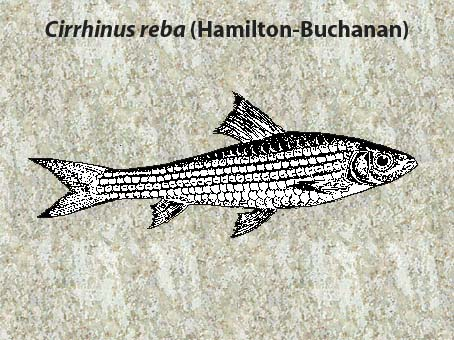

|
DIGITISED INVENTORY OF FRESHWATER FINFISHES AND SHELL FISHES OF INDIA |
Cirrhinus reba
Taxonomic
Details
----- Valid Name
----- Classification
----- Synonyms
----- Common Names
Other
Biological Details
----- Habit and
Habitat
----- Morphological
Features
----- Reproductive
Biology
---------- Breeding
season
---------- Breeding techinique
---------- Fishing methods
----- Biology
Stages of development:
Economic
Importance
----- Uses
----- Parts Used
Economic potenial to the country
----- ----- Fishery statistics
Miscellaneous Information
Literature
Name : Cirrhinus reba 
Family : Cyprinidae
Classification:
Phylum: Chordata Subphylum: Vertebrata
Class: Actinopterygii Subclass:Neopterygii
Division: Teleostei Subdivision: Euteleostei
SuperOrder: Ostariophysi Order:Cypriniformes
SubOrder: N.A. Family:Cyprinidae
Subfamily:Cyprininae
Synonyms: Cirrhina reba (Hamilton),1822
Cirrhinus reba (Hamilton),1822
Crossocheilus reba (Hamilton),1822
Cyprinus reba Hamilton ,1822
Common Names: Reba Carp
HABIT & HABITAT: Warm Water
Distribution :Plains & adjoining hilly areas of India.
MORPHOLOGICAL FEATURES: Body fairly elongate, its depth much more than head length. Snout slightly projecting beyond mouth, more pronounced in juveniles, often with pores. Mouth broad; upper lip entire, often fringed in juveniles; a thin cartilaginous covering inside of lower jaw. Barbels one pair of short rostrals generally present. Dorsal fin height less than depth of body. Pectoral fins as long as head. Caudal fin deeply forked. Scales hexagonal and moderate; lateral line with 34 to 38 scales; lateral transverse scale-rows 7/5-6.
REPRODUCTIVE BIOLOGY:. C. reba is heterosexual. Male and female can only be differentiated easily from the external sexual characters developed in the course of maturation and during breeding season, like other major carps, on the folio-wing features:
Characters Scale :Pectoral fin ] Slightly smaller, reaching to 6th or 7th L.I. I scale (Chaudhuri,1959a). Abdomen Bulging and shoft on touch. Slight yellowsh discharge or a few ova may come out on pre- ssure on the abdomen. Vent Slit elongated, introvert, white in colour. Slit round, extrovert, fleshy, pinkish colour.
Male :Rough with sandy texture on the flanks, nape, and anterior dorsal side. Rough, on its dorsal side, at the base. Slighty stouter and longer, reaching 8th or 9th L.I. scale (Chaudhuri, 1959a).
Breeding season:. C. reba is an annual breeder with a single spawning period restricted to south-west monsoon season of reba and some common carps of south India commences by the end of May and extends to the end of October, with maximum spawning taken place in the first half of the season (Chacko and Kuriyan, 1949a). Ganapati et al. (1948) observed that reba breeds in the river Cauvery near Bhavani under summer conditions also in the absence of the flood. Alkunhi and Rao (1951c) stated that in the same river reba breeds during June to September and the breeding takes place, irrespective of the nature of water, weather it be turbid flood water or clean non-flooded water, in the afternoon and during the night. The spawning grounds may be any shallow section of the river bed or shallow inundated stretches adjoining the river, or areas. As in the case of major carp breeding, certain resultant hydrological conditions emerged from the riverine flood are the main factors responsible for spawning of reba in the river. Alikunhi and Rao (1951c) experienced spawning-of reba both during the flood and draught conditions of the river Cauvery and viewed that the shallow waters affording the optimum range of temperature (82-84°F approx.) may have been factor that induce the fish to spawn. According to Rao et al. (1972) the breeding of reba is found to be distinctly different from that of the major carps. Reba once attains matuirty can breed even without impetus of flood conditions. Temperature and the physico-chemical conditions of water do not seem to have any specific influence on the breeding, since its spawning in the river Cauvery and Bhavani has been observed to be a wide range of temperature 22.8-30.2°C; pH 6.5-8.3; dissolved oxygen 5.4-11.1 mgil; alkalinity 40-169mgil; water hardness 40-130 mugil; specific conductivity 82-250 X 10-6 to 280-638 X 10-6 mhos. However, a preference of breeding is observed in diffused light conditions. C. reba do not spawn in ponds though they attain there full maturity. However, they can be easily induced to breed in confinement by pituitary hormone treatment. A small dose of hypophysis (6-8 mgikg in two injections to females, and 2-3 mgikg in a single dose to the males during the second injection to the female) appears to be very responsive.
Breeding techinique: N.A.
Fishing methods:Gillnet, driftnet, purse or clapnet, dragnet, fixed net, castnet, scoop or dip or handnet, fish traps, hooks and lines, and fish spear are normally employed for fishing at different depths of various types of water sheets.
BIOLOGY:A cyprinus of the Bangana kind, with two tendrils and
the fleshy lips (Hamilton, 1822), C. reba has an attractive appearance.
Its flesh do not contain many bones and has a good flavour. The flesh is soft
and good to eat, even it is no great request among the commoners. It perishes
rather quickly for soft tissue. In live transport, fry can not stand long
duration journey and die early specially when they are sent together with the
major carp seed. Reba is also not hardy in nature. A good mortality occurs
during repeated netting and handling, specially in the nursery pond management
practices. Reba has least salinity tolerance. Though a minor carp but for its
voracious feeding habits on zooplankton the young ones grow very quickly, even
faster than the young ones of catla by the end of the first year of life
Stages of development:The embryonic and the larval development in C.reba (Mookerjee etal., 1944c; Chacko, 1959; Alikunhi and Rao, 1951c; Chondar, 1970) are, in general, like those of the major carps. The embryonic development is of normal teleostean type.
Uses: They
are collected for stocking in ponds and in even seasonal waters because of their
quick growth. Economic
potential to the country
Reservoir-wise landing of Cirrhinus reba This carp grows to 30 cm in natural waters.
Breeding takes place in flooded shallows in June-September. Cultivated in ponds
in India. A plankton and detritus feeder. Growth fairly rapid; grows to about 30
cm in natural waters. Induced breeding by hypophysation successful in India.
Male smaller than female. Fry of this carp are available in abundance during
July. 1.Talwar, P.K. and A.G. Jhingran., 1991. Inland
Fishes Of India & Adjacent Countries,
vol. 1 & 2. Oxford & B H Publishing Co.Ltd.
Pg.173
2.Jhingaran, V.J. 1991. Fish And Fisheries
Of India. Hindustan Publishing Corporation Delhi,
(India).
Parts Used:
Year
1973
1974
1975
1976
1977
1978
1979
1980
1981
1982
1983
1984
1985
Reservoir
Govindsagar(kg.)
-
679
250
75
202
70
199
-
53522
65651
22167
14246
1904